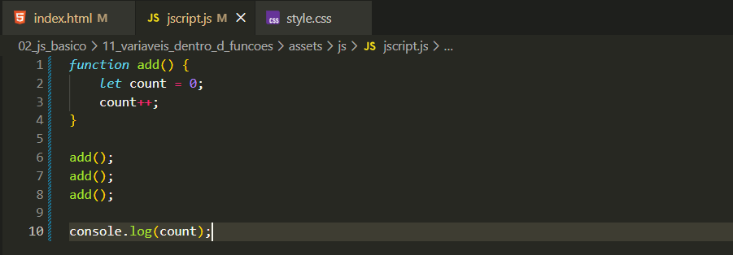

Agora veremos como funciona a dinamica de variaveis, dentro e fora de funcoes.
Function que adiciona variavel
Para iniciar iremos criar uma funcao que adiciona a uma variavel
Exemplo errado:

Nesse caso havera um erro, isso pois criamos ela dentro da function ou seja, tudo que criamos dentro de uma function pertence a function, isso ocorre quase sempre, tendo poucas execoes. Isso ocorrre pois ao criar uma function dentro de uma funcion ela tem escopo local, functionando apenas onde foi criada.
Exemplo Maneira Correta
Essa seria a maneira correta, onde foi criado uma variavel com escopo global, dessa forma ela basicamente pode ser usada dentro de qualquer funcao, ja que foi criada fora de todas as function
Importante
Devemos tomar cuidado ao criar uma variável dentro de uma função com o mesmo nome de uma variável global, pois o JavaScript dá prioridade ao escopo local.